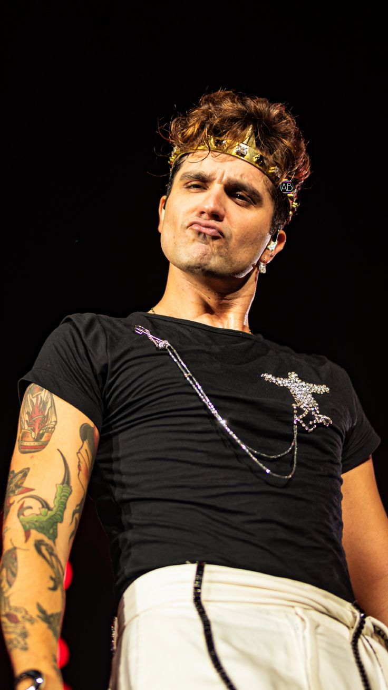
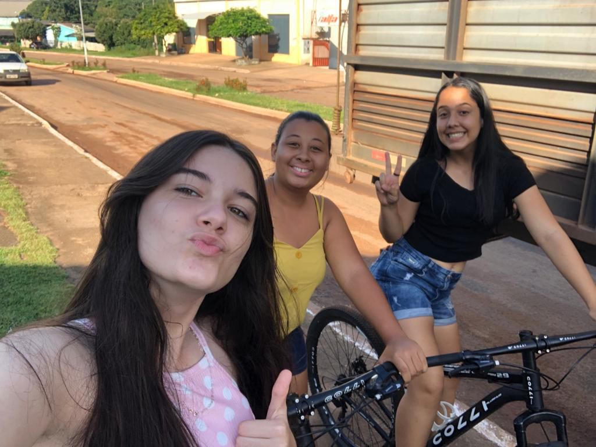
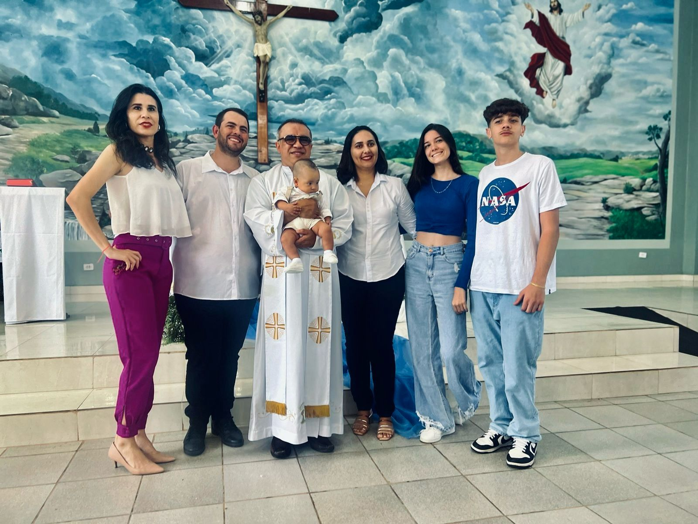
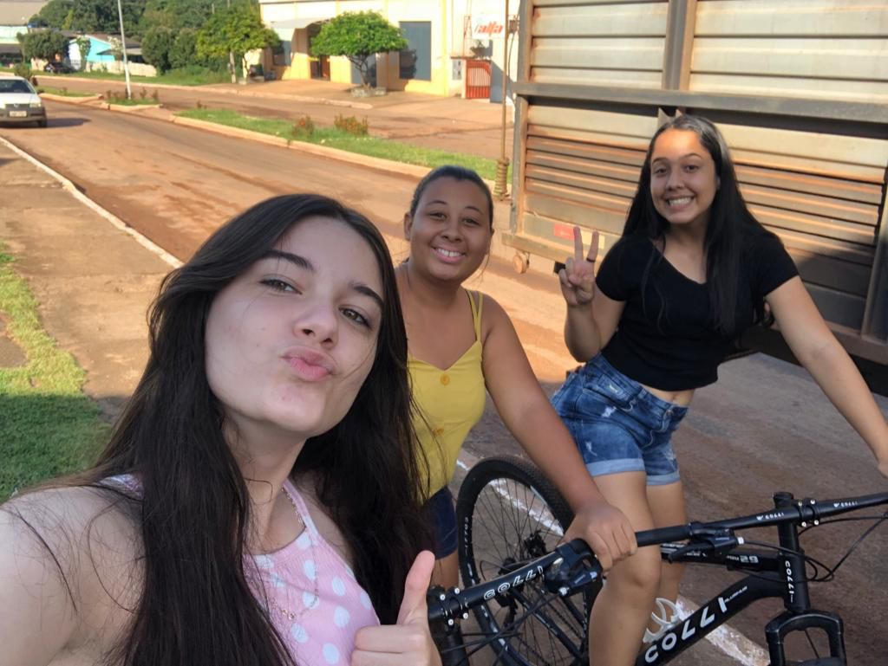
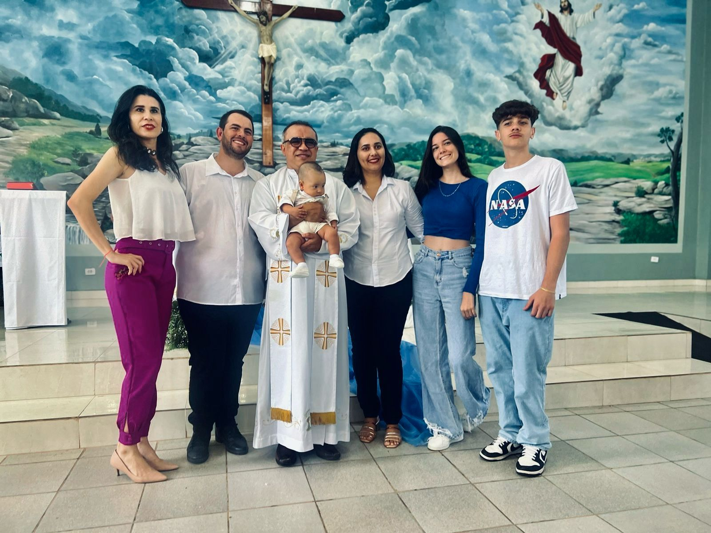

Quem Sou Eu
Olá! Meu nome é Camille Patricio Pagani Dias, sou estudante do Instituto Federal de Rondônia (IFRO), campus Vilhena. Estou cursando o ensino médio com técnico em informática.
MEU GOSTO MUSICAL
Eu sou fã do MAIORRRRR!!!!.
LUAN SANTANA 👑
Minha História
Nasci em Vilhena, mas passei uma parte significativa da minha vida morando em Chupinguaia. Cresci cercada pelo amor dos meus pais e com muitas histórias para contar.

Eu com os meus pais.
Morando em Chupinguaia
Este foi um período muito especial da minha vida, e tenho muitas memórias.
 



VIAGENS
Viagens que foram muito especial na minha vida, e tenho muitas memórias.

AMIZADES